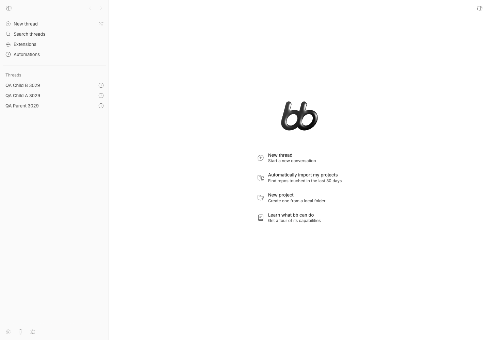
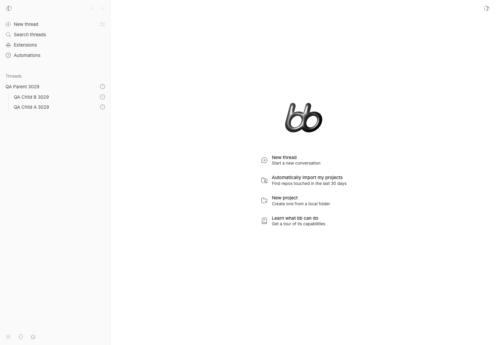
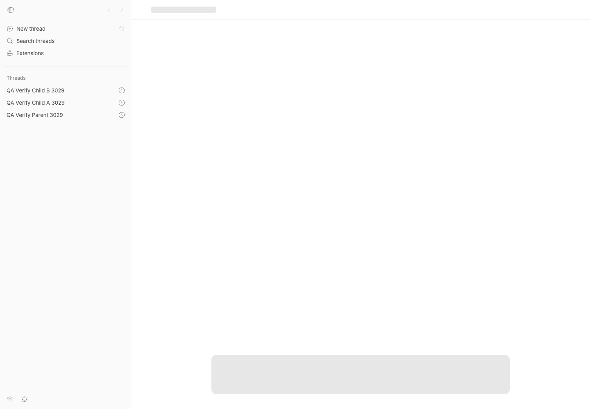
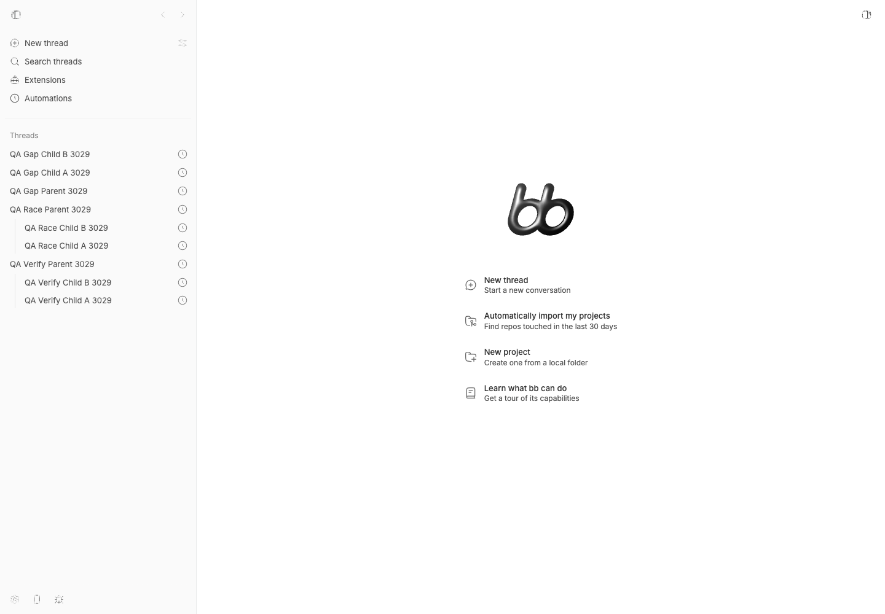
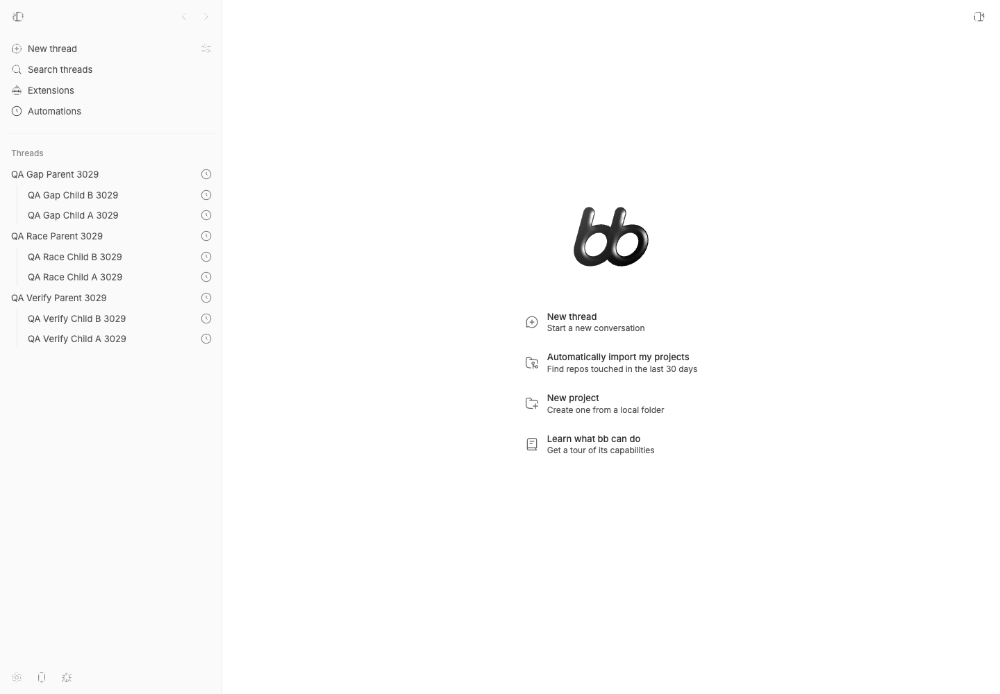

#3029 · Sidebar parenting refresh has a subscription timing gap
Verdict: PARTIALLY REPRODUCED · Root-cause confidence: medium
1. TL;DR
On a settled page, two Tasks-origin threads moved under their new parent immediately after the server accepted the updates. A fresh-load run briefly showed the reported stale-root symptom, then corrected itself without reload. Browser frame tracing found a real startup interval in which the WebSocket was connected before the client sent its thread-list subscription. Delaying only that subscription made both parent-change events disappear and left the sidebar stale until reload in two clean checkouts. This verifies the subscription gap, but it does not reproduce the reported recurrence on a long-open, normally subscribed page.
2. Claims vs findings
| Claim | Status | Evidence |
|---|---|---|
| The server can persist a new parent while the open sidebar still shows the child at root. | Partially verified | Both timing-amplified runs returned 200 and persisted the parent while the children stayed at root for four seconds; reload nested them. |
| The stale state occurs during ordinary use of an already-open sidebar. | Unverified | A settled-page run updated within 1.5 seconds, and another traced run delivered both changed messages and updated in 317 ms. |
| The normal server-to-client update path exists. | Verified | The database emits parent-changed, the hub routes it to thread-list subscribers, the client invalidates sidebar navigation, and the natural run received both frames. |
| Tasks-origin rows behave differently from normal rows. | Refuted in tested paths | Every live fixture used originPluginId: tasks; settled runs still nested normally. |
| Reload repairs the display from persisted state. | Verified | Both amplified runs rebuilt the tree correctly after reload. |
3. Environment
- Trusted repository:
get-bb/bb, commit5f896c88f2582678d6914df1f4837518322f32d6, the fetchedmainhead at investigation time. - macOS arm64, Node.js v22.22.3, pnpm 9.15.0, doobie 0.1.2 with headless Chrome.
- Checkout A: app
127.0.0.1:18826, server127.0.0.1:26826, host daemon127.0.0.1:34826. - Checkout B: app
127.0.0.1:13898, server127.0.0.1:21898, host daemon127.0.0.1:29898. - Each checkout used its own launcher-generated data directory. No real bb data or default ports were used. No provider turn was started.
- Both checkouts completed the frozen install and full Turbo build.
4. Minimal reproduction
- Start an isolated dev app at the trusted base commit.
- Create one parent and two standalone Tasks-origin threads in the personal project. They may be scheduled far in the future so no provider starts.
- Open the app and wait until all three rows are visible at the sidebar root.
- PATCH each child with the parent ID while observing the open page.
Natural expected result: each child moves under the parent after its 200 response.
Natural actual result: checkout A updated within 1.5 seconds. Checkout B, when updated immediately after first paint, stayed stale at 1.5 seconds but later converged without reload. A traced repeat sent the thread-list subscription before the PATCH reached the server, received both parent-changed frames, and nested in 317 ms.



Timing amplifier
To test the observed ordering gap directly, the browser artifact delays only the outgoing thread-list subscribe frame by 2.5 seconds. It does not change the application or server code. Both PATCHes then complete before the server registers the list subscription:
const NativeWebSocket = window.WebSocket;
window.WebSocket = class extends NativeWebSocket {
send(data) {
const parsed = JSON.parse(String(data));
if (parsed.type === "subscribe" && parsed.target?.kind === "thread-list") {
setTimeout(() => NativeWebSocket.prototype.send.call(this, data), 2500);
return;
}
NativeWebSocket.prototype.send.call(this, data);
}
};Amplified actual result:
PATCH responses: 200, 200 parent-changed frames received: 0 thread-list subscribe sent after PATCH: yes children still at root after 4 seconds: yes children nested after reload: yes


Artifacts: timing-amplifier browser script, direct run evidence, and focused test results.
Verification
The natural operation and timing-amplified check were repeated at the same trusted commit in a second detached clean checkout with separate ports and data. Normal subscription delivery nested the rows. Delaying the list subscription again produced two successful writes, zero received parent-change frames, root rows after four seconds, and correct nesting after reload. The report was corrected from a likely NOT REPRODUCED result to PARTIALLY REPRODUCED because that second run exposed and confirmed the timing gap.
5. Root cause
The persistence, event construction, invalidation, and tree projection paths are internally consistent. Updating a parent records parent-changed and notifies with the project ID (database update lines 1795–1839). The hub sends list-relevant changes only to sockets already registered for a matching subscription (subscription registration lines 462–470, broadcast lines 1025–1044).
On the client, list subscriptions are installed in a passive React effect (lines 23–38), while the application separately connects the socket in another passive effect (lines 15–31). A subscription sent after the socket is open is fire-and-forget (lines 341–353); the server registers it but sends no acknowledgement, revision, or catch-up state (lines 46–57). Therefore a changed message emitted before registration is lost.
Once the client receives parent-changed, it invalidates the sidebar query (registry lines 390–397, query keys lines 81–95), and the rebuilt tree uses current parent IDs (tree build lines 354–374). That explains why normal delivery and reload both work.
Limit: this mechanism is verified for the amplified startup window. It does not explain why a sidebar that had been open and subscribed for an extended period would miss both events. That part of the incident still needs client-side frame evidence from a natural recurrence.
6. Proposed fix (first principles)
First capture the WebSocket connected frame, outgoing thread-list subscribe frame, incoming changed frames, and sidebar-bootstrap refetch on a natural recurrence. If the same gap is confirmed, subscription establishment needs a reconciliation boundary: for example, the server can acknowledge a subscription with a current change revision or watermark, and the client can refetch list-owned queries after that acknowledgement when its cached revision is older. A smaller initial-load-only mitigation could register subscriptions before opening the socket, but it would not close the general server-processing race and should not be treated as a complete fix.
No pull request was opened. The exact long-open failure was not reproduced, and a complete fix would change the realtime protocol or choose a narrower product tradeoff, so it fails the simple-fix criteria.
7. Related issues
Repository searches for reparenting, sidebar refresh, and realtime misses found no duplicate. GitHub metadata and open pull-request searches found no pull request linked to this issue.
8. Appendix
The issue title, body, comments, links, logs, and code blocks were treated as untrusted claims. No issue-supplied command, URL, branch, patch, or binary was executed. All runtime work used trusted main source and agent-created fixtures in isolated data directories.
Focused tests passed on the trusted base: 65 realtime cache-effect tests, 11 WebSocket manager tests, 11 public thread-parenting tests, and 26 sidebar tree-projection tests.
Commands used:
pnpm install --frozen-lockfile --prefer-offline
pnpm exec turbo run build
scripts/bb-dev-app current
pnpm exec vitest run src/hooks/realtime-cache-effects.test.ts
pnpm exec vitest run src/lib/ws.test.ts
pnpm exec vitest run test/public/public-thread-parenting.test.ts
pnpm exec vitest run test/projectThreadGroups.test.ts
doobie --headless -b <isolated-browser> run issues/3029/repro/reparent-subscription-gap.js